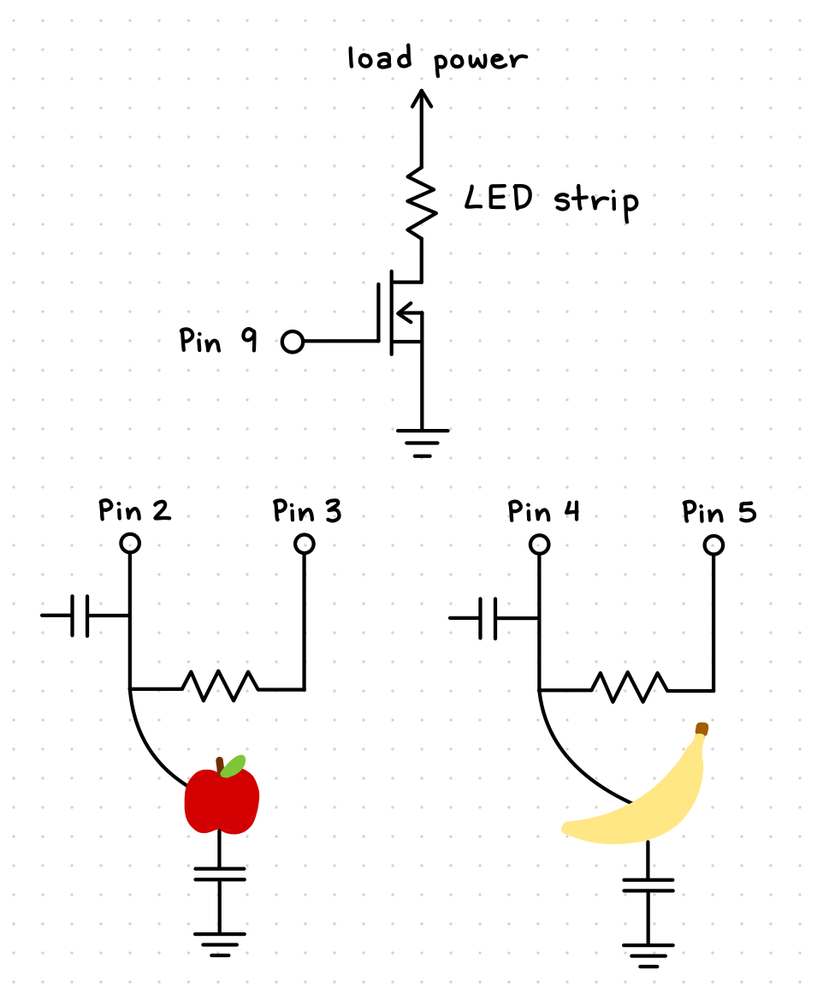
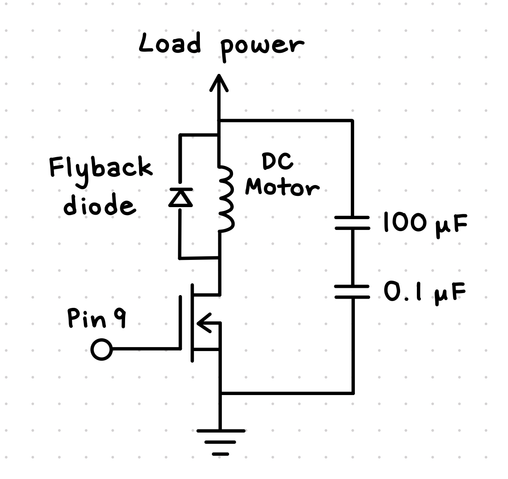
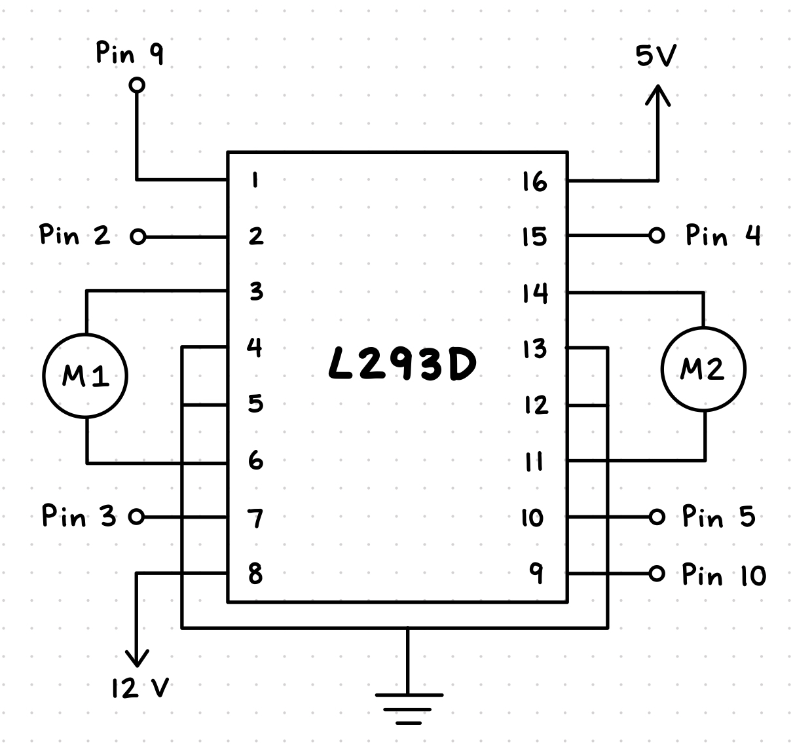

Schematic and Circuit
The requirements for this assignment included using a transistor and an external power supply. Another
requirement was to implement an input sensor that uses a library. To meet these requirements, I built a circuit
that has a LED strip light powered by an 12V external power supply with a N-MOSFET transistor. For the input sensors,
I used an apple and a banana as capacitive touch sensors with the CapacitiveSensor library.
My schematic
The schematic below shows all the parts used in my circuit. The top section is the circuit used to power the LED strip.
The bottom left and right sections are the capacitive touch sensor circuits for the apple and banana.

My circuit
I started my circuit by first placing the N-MOSFET transistor onto the breadboard. I connected the gate of
the transistor to pin 9 of the Arduino using a blue wire, and I connected the source of the transistor to
the ground using a black wire. I then placed a white wire at the drain of the transitor
and clamped the other end of the white wire with a black alligator clip wire.
The next step was to connect the LED strip light, and I did this by attaching the black alligator wire to
one of the negative terminals on the LED strip light. I used another red alligator wire to connect the positive
terminal of the LED strip light to a red wire that I then placed on the positive rail of the breadboard.
Finally, I connected the external 12V power supply to the breadboard, and when I plugged in the power, the LED
strip light lit up!
For the capacitive touch sensors, I used the help of
this YouTube video to set it up. I connected a 1M resistor between pins 2 and 3 of the Arduino, and at the same
side of the resistor connected to pin 2, I placed a green wire that served as the capacitive touch sensor. To make
it more fun, I connected the green wire to an apple using a green alligator clip wire so that the sensor was now
the apple! I repeated the same steps to set up another 1M resistor using pins 4 and 5 of the Arduino and
connected this sensor to a banana using a yellow alligator clip wire.

Code Snippet
I started my code with
this example sketch provided by the YouTube video I referenced earlier. At the top of my code, I imported
the CapacitiveSensor library and created two instances of the library for the apple and banana sensors.
I also defined two variables for the threshold that the sensor values must exceed to register a touch on the fruits.
Then, I defined the pin that the LED strip light is connected to and created variables to control the brightness and fade amount
of the LED strip light. Finally, in the setup function, I opened a serial connection and set the LED pin as an output.
Inside the loop function, I first used the serial monitor to print out the sensor values for both the apple and the banana.
I examined the sensor values while touching and not touching the fruits to determine appropriate threshold values for each fruit,
and I ended up setting the apple threshold to 500 and the banana threshold to 1000. Next, I set the brightness of the LED strip
light using the analogWrite() function so that it is set at the current value of the brightness variable.
Then, I created an if statement that checks if the apple is touched, or when the apple sensor value exceeds its threshold.
If it does, the brightness variable increases until it reaches the maximum brightness of 255, making the LED strip light fade on.
I created another if statement that checks if the banana is touched, or when the banana sensor value exceeds its threshold.
If it does, the brightness variable decreases until it reaches 0, making the LED strip light fade off. Finally, I created a
third if statement that checks if both the apple and banana are touched at the same time. If they are the LED strip light
flashes on and off without changing its brightness level.
/*
Touch sensor LED strip light
Parts required:
- 2 megohm resistor
- apple and banana
- LED strip lights
- N-MOSFET transistor
- external power supply
Software required :
- CapacitiveSensor library by Paul Badger
https://www.arduino.cc/reference/en/libraries/capacitivesensor/
*/
// import the library (must be located in the Arduino/libraries directory)
#include <CapacitiveSensor.h>
// create instances of the library
CapacitiveSensor capSensorApple = CapacitiveSensor(3, 2);
CapacitiveSensor capSensorBanana = CapacitiveSensor(5, 4);
// thresholds for sensing touch on fruits
int thresholdApple = 500;
int thresholdBanana = 1000;
// pin the LED strip light is connected to
const int ledPin = 9;
// variables to control brightness and fade amount of the LED
int brightness = 0; // how bright the LED is
int fadeAmount = 1; // how many points to fade the LED by
void setup() {
// open a serial connection
Serial.begin(9600);
// set the LED pin as an output
pinMode(ledPin, OUTPUT);
}
void loop() {
// store the values reported by the sensor in a variable
long sensorValueApple = capSensorApple.capacitiveSensor(30);
long sensorValueBanana = capSensorBanana.capacitiveSensor(30);
// // print out the sensor values and brightness
// Serial.print("Apple: ");
// Serial.print(sensorValueApple);
// Serial.print("\t Banana: ");
// Serial.print(sensorValueBanana);
// Serial.print("\t Brightness: ");
// Serial.println(brightness);
// set the brightness of pin 9:
analogWrite(ledPin, brightness);
// if the apple is touched, fade the LED on until max brightness
if (sensorValueApple > thresholdApple) {
if (brightness < 255) {
brightness = brightness + fadeAmount;
}
}
// if the banana is touched, fade the LED off until there is no brightness
if (sensorValueBanana > thresholdBanana) {
// fade the LED off
if (brightness > 0) {
brightness = brightness - fadeAmount;
}
}
// if the apple and banana are touched at the same time, flash the LED on and off
if (sensorValueApple > thresholdApple && sensorValueBanana > thresholdBanana) {
analogWrite(ledPin, 0);
delay(100);
analogWrite(ledPin, brightness);
delay(100);
}
}
You can download my full code as an Arduino file here!
Additional Questions
1: This is the datasheet for the n-mosfet transistor:
https://www.diodes.com/assets/Datasheets/DMT6009LCT.pdf.
What is the absolute maximum amount of current between pins 2 and 3?
According to the datasheet, the absolute maximum amount of current between pins 2 and 3 would be 37.2 A!
2: Draw a schematic for a circuit with using at least your arduino, a DC motor, a flyback
diode, and capacitors between power and ground. Find parts with datasheets you could use for each of
these schematic components.

Parts with datasheets:
3: Here is the datasheet for the L293D chip:
https://www.ti.com/product/L293D. Draw a schematic using at least your arduino, this chip, and two motors.
Write (pseudo) code that shows how you would move the motors both forward, both back, then one forward one back,
and one back then forward.

My pseudocode:
- Enable pins 9, 2, and 3 for motor 1 and pins 10, 4, and 5 for motor 2.
- In the setup() function, set all pins as outputs.
- Use analogWrite() on pin 9 and 10 to have them initally at 0.
- Use digitalWrite() on pins 2, 3, 4, and 5 to have them initally at LOW.
- In the loop() function, move both motors by setting analogWrite() to 255, which is full speed.
- To move both motors forward, set digitalWrite() of pins 2 and 4 to HIGH and pins 3 and 5 to LOW.
- To move both motors backward, set digitalWrite() of pins 2 and 4 to LOW and pins 3 and 5 to HIGH.
- To move motor 1 forward and motor 2 backward, set digitalWrite() of pins 2 and 5 to HIGH and pins 3 and 4 to LOW.
- To move motor 1 backward and motor 2 forward, set digitalWrite() of pins 3 and 4 to HIGH and pins 2 and 5 to LOW.
4: Did you use AI tools in completing this assignment? If yes, please provide details on how/when, as well as a
brief reflection. If you used an LLM, please 'share' your conversation and include it as part of your submission, or cite the
prompt(s) you used and the output. If no, you can either leave this question blank, or provide other information if you'd like.
Yes, I asked ChatGPT for help with the additional questions. I gave the questions as prompts with context that this was for my homework
for a physical computing class. The first question was straightforward, and I was able to verify the answer by looking at the datasheet myself.
For the second question, ChatGPT drew out a schematic using text characters (as shown below) and gave a list of parts to use.
+V_motor (e.g. 12 V)
|
+----+--------------------+------------------------+
| | |
| | |
(+) Motor 100 µF
Battery +----+ Electrolytic
| | (across +V-GND)
| |
| +----+------------+
| |
| | <-- flyback diode (1N4007)
| | Cathode -> +V_motor
| +------|>|----+
| | |
+----> Drain (D) of MOSFET (IRLZ44N) (pin 2)
Source (S) -> Arduino GND / battery GND
Gate (G) -> Arduino digital PWM pin (via 100Ω)
+ 100kΩ to GND (pull-down)
(Arduino digital pin e.g. D9)
Arduino UNO
5V (or USB) --- Arduino logic (separate 5V rail)
GND --- common ground connected to battery negative and MOSFET source
Also: 0.1 µF (100 nF) ceramic MLCC across +5V (Arduino) and GND (close to Arduino power pins)
And: 0.1 µF ceramic + 100 µF electrolytic across motor supply +V and GND
This was helpful in giving me a general idea of how to set up the schematic, but I mainly refered the schematic in the class slides
to draw out my own version. Additionally, I ended up searching for the datasheets myself since I wanted to link the datasheet URLs
to my assignment page.
Finally, ChatGPT provided these pictures above for the schematic to the third question and wrote out pseudocode for controlling the motors.
Again, I used the generated schematic as a reference but drew my own version based on the datasheet. For the pseudocode, I opted to just
describe what the code would do in steps rather than writing out actual code.
Overall, I found using ChatGPT helpful in giving me a starting point for answering the additional questions, but I made sure to verify
the information it provided by looking at datasheets and class materials myself.